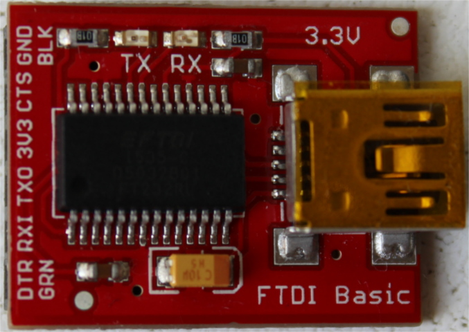

ハードウェアとの出会い
これから使用するハードウェアについて詳しくなりましょう。
STM32F3DISCOVERY（「F3」）

この本では、このボードを「F3」と呼びます。
このボードには何が搭載されているか見てみましょう。
- STM32F303VCT6マイクロコントローラが1つ。このマイクロコントローラは次のものを搭載しています。
-
シングルコアのARM Cortex-M4Fプロセッサ。このプロセッサは単精度浮動小数点演算を行うハードウェアを搭載し、 最大72MHzのクロック周波数で動作します。
-
256 KiBの「Flash」メモリ（1 KiB = 1024バイト）
-
48 KiBのRAM
-
多くの「ペリフェラル」。タイマ、GPIO、I2C、SPI、USARTなど。
-
2つの横方向の「ヘッダー」に露出しているたくさんの「ピン」
-
重要 このマイクロコントローラは、（おおよそ）3.3Vで動作します。
-
- ジャイロスコープが1つ
- 円形に配置された8個のユーザLED
- 第2のマイクロコントローラ: STM32F103CBT。このマイクロコントローラは、実際には、ST-LINKというオンボードプログラマおよびデバッガの一部であり、 「USB ST-LINK」という名前のUSBポートに接続されています。
- 「USB USER」というラベルが付いている第2のUSBポート。 このUSBポートは、メインマイクロコントローラ（STM32F303VCT6）に接続されており、アプリケーションで利用できます。
シリアルモジュール

このモジュールは、F3のマイクロコントローラとノートPCとの間でデータをやり取りするために使います。 このモジュールは、USBケーブルを使ってノートPCに接続されます。ここでは、これ以上言及しません。
Bluetoothモジュール

このモジュールは、シリアルモジュールと全く同じ目的で使いますが、データはUSBの代わりにBluetooth経由で送信します。